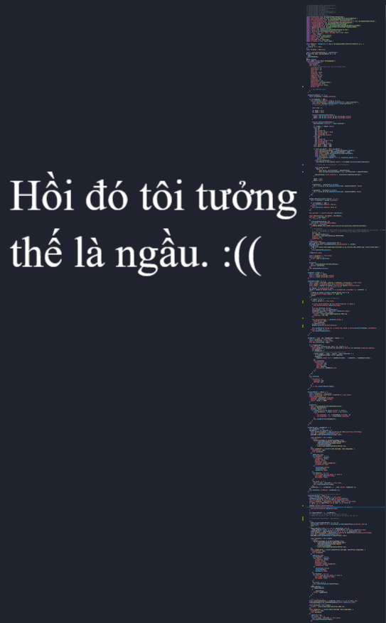
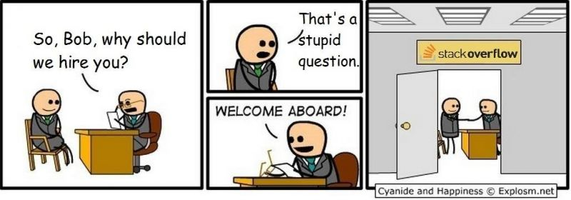
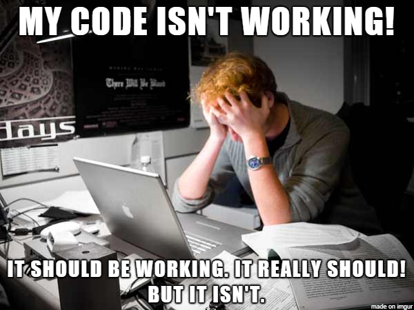

8 Sai Lầm Newbie Thường Gặp Trong Lập Trình
Bài viết này sẽ chỉ ra cho các bạn những lỗi thường gặp phải ở những người mới bắt đầu chập chững vào nghề để từ đó chúng ta sẽ có thể lưu ý và tránh những lỗi này trong công việc về sau.
1. Không chia nhỏ code.
Mình nghĩ đây có lẽ là 1 điều rất hay gặp ở các bạn mới vào nghề. Các bạn thường cứ cố nhồi nhét thật nhiều thật nhiều code vào một file, nào là function, nào là class, nào là module. Có bạn còn nghĩ thế là ngầu, ngồi code thấy thằng bên cạnh viết 1 file code dài ngoằng kéo hoa cả mắt là thầm nghĩ trong đầu “chắc hẳn thằng này là pro”. Nhưng thực sự thì chẳng phải thế, sau này khi nhìn vào những file code này, chắc các bạn đó (hoặc có thể là bạn chăng) sẽ phải lắc đầu ngán ngẩm: thằng nào hồi đó viết code dốt thế không biết, viết thế này debug đến tết à???
Giải pháp là hãy chia nhỏ các đoạn code, có chú thích và giải thích rõ ràng. Nên nhớ, code của bạn không phải chỉ để mình bạn hiểu, code cần được đọc hiểu bởi các lập trình viên khác. 
2. Thích tự viết hơn là dùng thư viện/hàm đối với các task phổ biến.
Thực ra về mặt nào đó thì điều này không hẳn là xấu.
Nó giúp bạn code cứng tay hơn, tự mình xử lí vấn đề nào đó. Tuy nhiên thì với cá nhân mình nếu task đó phổ biến và thư viện hoặc ngôn ngữ đó đã support các hàm để thực hiện rồi thì việc biết áp dụng vào lại đem đến hiệu quả hơn cả. Vì điều đó sẽ giúp bạn tiết kiệm được rất nhiều thời gian và công sức. Thêm nữa việc sử dụng thư viện hoặc hàm có sẵn của ngôn ngữ sẽ giúp code của bạn gọn hơn đáng kể và độ chính xác cũng được đảm bảo. Code của mình tự viết không phải lúc nào cũng tốt và tối ưu nếu so với hàm có sẵn và của thư viện đúng không?
Vậy nên, hãy dành tâm trí và sức lực cho việc tạo ra giá trị khác thay vì làm lại những cái đã có sẵn. 
3. Google search mọi lúc.
Việc suy nghĩ giải quyết vấn đề sẽ giúp chúng ta rèn luyện tư duy cũng như phản xạ. Tuy nhiên có rất nhiều bạn mới chập chững vào rất thích sử dụng google ngay khi gặp một vấn đề nào đó thay vì động não suy nghĩ. Chỉ một vài động tác gõ phím và một vài cú click chuột chúng ta đã có một câu trả lời chuẩn không cần chỉnh cho vấn đề các bạn đang gặp phải. Và thế là copy-paste thôi, tin mình đi, không phải code nào bạn copy bạn cũng có thể đọc hiểu được đâu, và với rất nhiều newbie thì chỉ cần copy về, code chạy được là ngon rồi chứ chẳng quan tâm lắm về vấn đề đọc hiểu được đoạn code mình vừa đi copy.
Hãy rèn luyện cho mình thói quen suy nghĩ và giải quyết vấn đề trước khi tìm đến Google hay Stackoverflow nha.
4. Luôn nghĩ rằng code nhanh tốt hơn code đẹp và dễ đọc.
Một điều rất hay xảy ra với các bạn newbie là về việc viết code khoa học và tối ưu, các bạn mới vào có thể chưa quen hoặc chưa biết cách tổ chức code sao cho tối ưu vào dễ đọc nhất. Có nhiều bạn còn cứ nghĩ rằng, code nhanh và chạy ổn là được. Khi nhìn vào code bạn ấy thì ôi thôi, tên biến tùm lum toàn 1 chữ cái từ a, a1, b, b1, b2,… hàm thì viết lộn xộn, module, import tùm lum. Khi hỏi thì “code chạy được là được, cần gì câu nệ thế”. Hoặc đến khi hỏi lại đến khi chính các bạn còn ngồi trầm tư không biết biến này làm gì, hàm này làm gì, ngồi loay hoay mãi chẳng biết giải thích code như thế nào.
Để trở thành một người có thể đi xa trong giới lập trình, tốt hơn hết bạn nên học cách làm thế nào để viết code sạch và đẹp ngay từ khi bắt đầu. Trong tương lai, có thể bạn sẽ bất ngờ với chính mình của hiện tại đó :)

5. Viết code không có kế hoạch
Khi nhận được 1 task hoặc làm 1 project nào đó là hì hục nhảy luôn vào code, code, code. Chẳng thèm phân tích hay lên kế hoạch tổ chức code của bản thân. Đó là 1 trong những điều rất hay gặp ở các newbie, các bạn nghĩ rằng điều đó là tốn thời gian và còn cả suy nghĩ: “Đằng nào sau này chẳng có thêm nhiều chức năng khác phát sinh, nghĩ làm sao hết được, cứ code đến đâu hay đến đó”.
Kết quả là, với những task nhỏ thì không sao, những task to hay projects to 1 tý, chỉ sau một vài tiếng code, dung lượng code trong project tăng lên, nhiều modules, nhiều components đến lúc nhìn lại chẳng khác gì một đống tơ vò, chắp vá. Bẵng đi 1 vài hôm quay trở lại code thì hoa mắt chóng mặt chẳng nhớ nổi cấu trúc, luồng code như thế nào để mà code tiếp, thế là cảm thấy nản và tặc lưỡi bỏ rơi đứa con của mình khi nó thậm chí còn chưa thành hình.
Lời khuyên cho bạn là, hãy có một plan tổng thể về project bạn sẽ làm, có cấu trúc rõ ràng, chia ra các phần cụ thể. Luyện cho mình kỹ năng nhìn tổng quan, không những giúp ích trong công việc mà nó cũng làm cho bạn dễ thở hơn trong cuộc sồng.
6. Không kiểm tra dữ liệu đầu vào, đầu ra.
Khi các bạn làm các project demo, luyện tập, các bạn là người làm chủ cuộc chơi vậy nên dữ liệu luôn luôn “chuẩn”, chẳng có chuyện code của bạn sẽ “tử ẹo” vì 1 vài dữ liệu sai lệch gì đó, điều đó khiến cho nhiều bạn newbie ngó lơ việc kiểm tra dữ liệu đầu vào cũng như đầu ra. Mặc định coi như dữ liệu đầu vào lúc nào cũng chuẩn cũng oke, code mình chạy không thể sai được. Đến khi đi làm, server lỗi, mạng chậm, code lỗi đỏ lòm web, app treo chết không chạy được lúc ấy lại tá hỏa đi debug từng dòng code một xem chết ở đâu.
Mình cũng từng như vậy, vì cảm thấy việc kiểm tra code thật sự rất lằng nhằng và tốn thời gian, dù biết nhưng mình rất hay ỉm đi việc đó, nhất là trong các project cá nhân, điều đó đã tạo nên 1 thói quen không tốt đến khi đi làm được nếm trải cảm giác. Local chạy ngon lành cành đào mượt, lên production thì client gửi báo lỗi web treo tùm lum. Nên nhớ, dù trong quá trình bạn làm tốt như thế nào nhưng đầu ra không chạy được thì cũng không có nghĩa lý gì.
7. Không xử lí ngoại lệ.
Cũng như lỗi ở trên, các bạn mới chập chững thường ít quan tâm đến vấn đề xử lí ngoại lệ vì vấn đề này khá rắc rối cũng như tốn nhiều thời gian, thử nghĩ cứ code một hàm lại phải viết 1 hàm xử lí ngoại lệ cho nó, thật mệt mỏi, thế là thôi, ngó lơ. Đến lúc có lỗi thì phải debug từng dòng 1 rõ là khổ. Dành thời gian suy nghĩ về vấn đề này, chí ít, có còn hơn không.
8. Không biết debug.
Có thể nói đây là 1 điều thật sự tệ vì ngành của lập trình viên chúng ta khắc nghiệt ở chỗ. Không viết thì không sao, cứ viết thì thể nào cũng sẽ có bug lòi ra dù to hay nhỏ. Một điều mà các bạn newbie rất sợ đó là code gặp bug. Ngồi học tutorial trên mạng, gõ giống hệt ông giảng viên, người ta chạy thì ngon, mình thì không chạy được. Thế là lại ngồi hì hục soi từng dòng code một so sánh từng kí tự, dấu chấm phẩy xem có khác gì nữa không, rõ là “Nông Văn Dền”.
Kĩ năng debug là 1 trong những kĩ năng phải trải qua rèn luyện và không phải một sớm một chiều có thể hình thành được. Tuy nhiên làm lập trình viên mà debug code không biết thì chỉ có nước về quê “nuôi cá và trồng thêm rau thôi”. 
Tạm kết
Trên đây là những lỗi thường gặp phải khi mới bước vào giới lập trình. Hành trình đầy khắc nghiệt và gian nan, nhưng tin mình đi, nếu bạn kiên trì, bạn sẽ nếm được những thành quả ngọt ngào, bù đắp xứng đáng cho tâm sức bạn bỏ ra. Chúc các bạn thành công